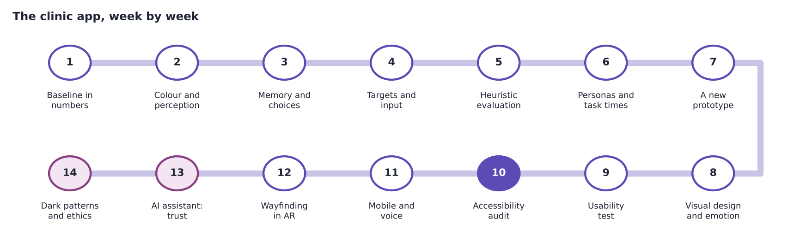
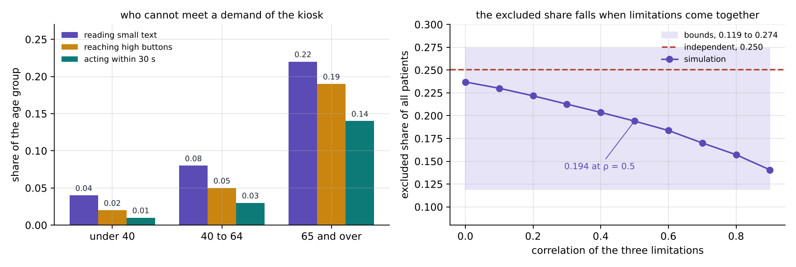
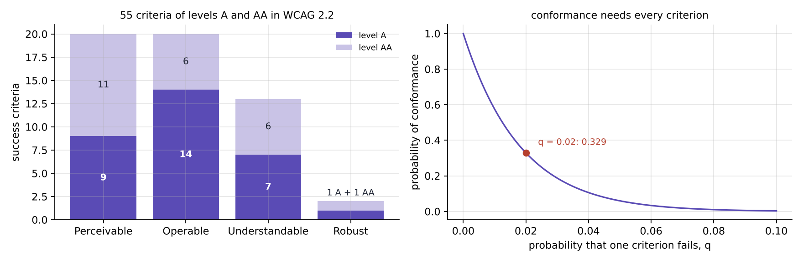
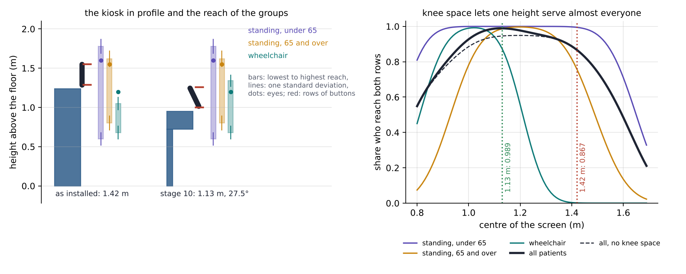
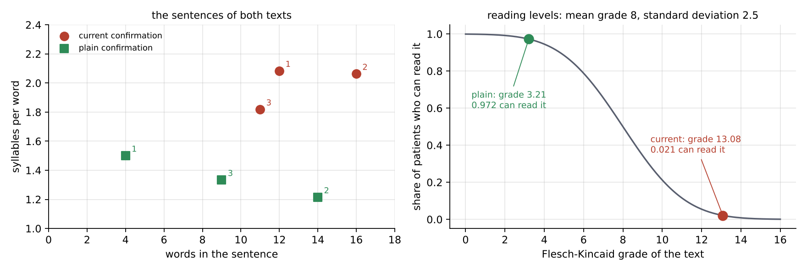
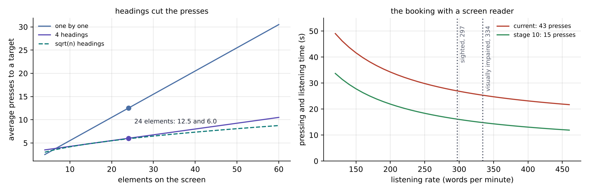
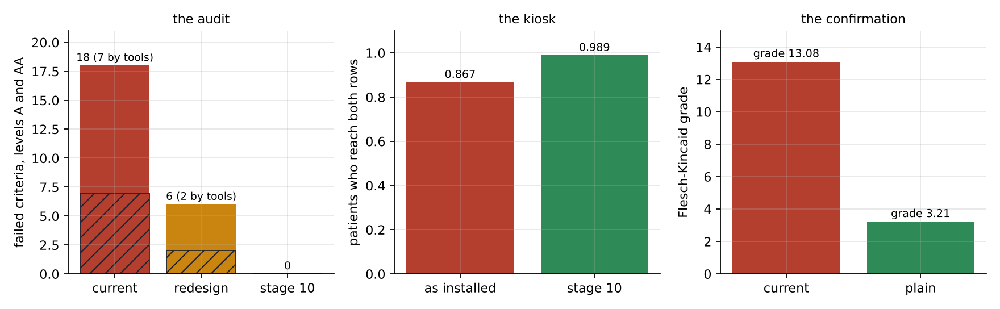

Overview
Weeks 1 to 9 designed the clinic app for its patients and tested it with them, and stage 9 showed that older patients failed most often. This week asks who cannot use the app and its kiosk at all, and why. It starts with disability as a mismatch between people and a design. The Web Content Accessibility Guidelines (WCAG) 2.2 then turn needs into testable criteria. Three barriers are measured in numbers: The reach and sight lines of the kiosk, the reading level of its texts and the work of a screen-reader user. The clinic app reaches stage 10, an accessibility audit of the app and the kiosk. The Python step handles text with regular expressions. The week closes with artificial intelligence (AI) that describes images for blind people.
Week at a glance
flowchart LR A["Who is excluded"] --> B["WCAG 2.2"] B --> C["Reach and sight"] C --> D["Plain words"] D --> E["Screen readers"] E --> F["Interface clinic"] F --> G["The human side"] G --> S["The clinic app, stage 10"] S --> H["Toward human-AI interaction"]
Every method on this page is also written as Python code in the Colab notebook of the week. Its code is divided into numbered sections. Each orange box on this page names the section whose code carries out what the text above the box explains. The box says what to run and what to look at in that section, and its button opens the Colab notebook at that place. The games, the practice parts and the self-assessment of the week are in the interactive lab. Each violet box opens one part of the interactive lab. The part ends with a link back to its box on this page, and the Colab notebook is always opened from the orange boxes here.
Python step 10: Text with regular expressions
Python code in the Colab notebook, right after Section 0 (setup). Open the Colab notebook and run this step cell by cell: It consists of short pieces of Python code with their explanations, a quick check and three exercises. Topics: Strings and their methods · Finding words and times with re · Counting syllables · Splitting a text into sentences.
The step handles text in Python [1]: The methods of strings and the module re for regular expressions. It counts words, syllables and sentences, the inputs of the reading formulas of this week. Students who have never programmed start with the start-here notebook of the course.
Weeks 1 to 8 measured the booking flow, fitted it to human abilities, described three personas, built a prototype and gave the screens a calm design. Week 9 tested both designs with 26 patients: The redesign was faster and better liked, and the patients who failed were mostly older.
This week audits the app and its kiosk for accessibility. Stage 10 measures who is excluded and removes the barriers that the audit finds.

Who is excluded: Disability as a mismatch
The World Health Organization (WHO) estimates that 1.3 billion people, 16 percent of the world's population, experience significant disability [2]. It describes disability as the result of an interaction between health conditions, such as blindness or a spinal cord injury, and environmental and personal factors [2]. A wheelchair user meets a barrier only where something is out of reach.
Seen this way, a design can create disability. A screen at standing height disables a wheelchair user, and small grey text disables a patient with low vision. Week 1 set user-centred design against system-centred design. Accessibility asks the user-centred question for everyone: Who cannot use this at all?
A limitation can be permanent, such as blindness, or temporary, such as eye drops before an eye examination. It can also be situational, such as sunlight on a screen. Week 4 met situational limits of precision. Universal design, inclusive design, accessible design and design for all grew in different places and stress different things. Persson, Åhman, Yngling and Gulliksen showed that they share one goal: Products that as many people as possible can use [3].
Inclusive design uses knowledge of the diversity of users throughout development. Waller, Bradley, Hosking and Clarkson make the case that this leads to better decisions and wider markets, and that ageing populations make it more pressing [4]. A first question is how many people a design excludes. If a design makes \(k\) demands, such as reading small text or reaching a high button, the excluded share is
\(e_j\) is the share of users who cannot meet demand \(j\). The product holds if the limitations are independent. The bounds hold whatever their overlap: At least as many users are excluded as by the hardest demand, and at most the sum of all.
A worked example. The current kiosk asks every patient to read small text, to reach buttons up to 1.55 m and to act within 30 seconds on each screen. In the clinic, these demands exclude about 0.12, 0.09 and 0.06 of the patients. If the limitations were independent, \(E = 1 - 0.88 \times 0.91 \times 0.94\). Then \(0.88 \times 0.91 = 0.801\) and \(0.801 \times 0.94 = 0.753\), so \(E = 0.247\). The bounds give \(0.12 \le E \le 0.27\).
Limitations are not independent, however. Poor sight, stiff shoulders and slow reactions come together with age, so the same patients carry several of them. Section 1 of the Colab notebook simulates the clinic. With a correlation of 0.5 between the limitations, 0.194 of all patients are excluded, but 0.365 of those aged 65 and over.
Scene: One kiosk, nine barriers. Nine patients wait in the main hall, each with one barrier at the kiosk: In seeing, in reaching or in hearing, and permanent, temporary or situational. The board names their barriers. Switch on the five features of an accessible kiosk one by one: The ring under a patient turns green when a feature removes the barrier. The readout counts how many patients each feature serves.
The scene shows the curb-cut effect. Blackwell describes how measures made for one excluded group end up helping many others [5]. Cuts in the kerb, made for wheelchairs, serve parents with prams, workers with carts and travellers with suitcases.

Check your understanding. A kiosk excludes 0.12 of the patients through its text and 0.09 through its height. What is the largest share that both demands can exclude together?
Python code in the Colab notebook, Section 1. Open Section 1 of the Colab notebook and run it. The functions exclusion_independent and exclusion_bounds carry out the formulas of this section and are checked on the worked example. The function simulate_patients draws 100 000 patients whose limitations come together with a correlation \(\rho\). A figure shows the excluded share against \(\rho\) within its bounds.
- Think of a building or an app that you use every day. Who might be excluded by it, permanently, temporarily or in some situations?
- Which of the three kinds of limitation would a test with students, as in Week 9, never meet?
WCAG 2.2: Four principles and testable criteria
WCAG 2.2 organises accessibility under four principles [6]. Content must be perceivable, for example through text alternatives for images. Its interface must be operable, for example with a keyboard and with enough time. It must be understandable, with readable text and help with errors. Finally, it must be robust, so that assistive technologies such as screen readers can interpret it.
Thirteen guidelines under the principles hold the success criteria, the testable statements. WCAG 2.2 has 86 of them in force: 31 at level A, 24 at level AA and 31 at level AAA. A page conforms to level AA only if it meets all 55 criteria of levels A and AA [6]. Week 2 applied two of them, the contrast ratio and the use of colour.
WCAG 2.2 added nine criteria to WCAG 2.1 and removed one, 4.1.1 Parsing, as obsolete [6]. Six of the new criteria apply at levels A and AA, and several meet the clinic app of earlier weeks. Dragging movements (2.5.7) asks for a single-pointer alternative to every drag. The button that replaced the slide to confirm in Week 4 provides it. Accessible authentication (3.3.8) forbids a cognitive test, such as recalling a password, unless an alternative or help exists. The patient number typed from memory in Week 3 fails it.
Target size (minimum) (2.5.8) measures targets in the pixels of Cascading Style Sheets (CSS), the language that lays out web pages. Targets must be at least 24 by 24 CSS pixels, unless they are spaced apart or another exception applies [6]. A CSS pixel is a unit of length, not a dot of the screen, so its size in millimetres depends on the device:
\(n_{px}\) is the size of a target in CSS pixels, and \(W_{mm}\) and \(W_{px}\) are the width of the screen in millimetres and in CSS pixels. A worked example. A phone that shows 390 CSS pixels across 64.6 mm has \(64.6/390 = 0.166\) mm per pixel. The minimum of 24 pixels is then \(24 \times 0.166 = 3.98\) mm. The chips of 12 mm that Week 4 chose for patients with tremor measure \(12/0.166 = 72.3\) pixels, three times the minimum. A criterion of WCAG is a floor, not a goal.
Few websites conform. In 2026, automated tests found failures of WCAG on 95.9 percent of the home pages of the top one million websites, with 56.1 errors per page on average [7]. Text with low contrast, the criterion of Week 2, appeared on 83.9 percent of them.
Conformance is fragile because a single failed criterion breaks it. If each of the \(m = 55\) criteria failed independently with the probability \(q\), a page would conform with the probability
A worked example. With \(q = 0.02\), \(\ln 0.98 = -0.0202\), so \(\ln P = 55 \times (-0.0202) = -1.111\) and \(P = e^{-1.111} = 0.329\). Even a small risk per criterion leaves only one page in three conformant.
Automated tools help, but they see only part of the problems. Vigo, Brown and Conway compared six tools with the judgement of experts [8]. The tools covered 23 to 50 percent of the success criteria and found 14 to 38 percent of the violations that the experts had found. The other criteria need people: Experts with assistive technologies and tests with disabled users. Experts also disagree, as Week 5 showed for usability problems, so audits use more than one.

Check your understanding. A page meets 54 of the 55 criteria of levels A and AA. Does it conform to level AA?
Python code in the Colab notebook, Section 2. Open Section 2 of the Colab notebook and run it. The table audit holds the 55 criteria of levels A and AA with the results of the current app and the redesign. The code counts the failures by principle and marks those that tools can find, and p_conform carries out the formula of this section.
- A manager says that the app passes WCAG, so it is accessible. What would you answer?
- Which criteria of this section would a tool check, and which need a person?
Reach and sight at the kiosk
A kiosk is part of the building as well as an interface. In the United States, the Americans with Disabilities Act (ADA) is the basis of the 2010 ADA Standards for Accessible Design, which set the heights of controls [9]. Where a forward reach is unobstructed, controls lie between 380 mm and 1220 mm above the floor. Over an obstruction deeper than 510 mm, the highest control drops to 1120 mm.
These limits come from research of the 1970s. Steinfeld, Maisel, Feathers and D'Souza measured users of wheelchairs and scooters again and concluded that the standards need updating [10]. In their sample, a side reach to 1220 mm served the 99th, 95th and 96th percentiles of manual wheelchair, power wheelchair and scooter users [11]. Many users could not reach down to 380 mm, however, and the authors proposed 700 mm as the lower limit. For a forward reach, knee and toe space under the counter mattered most [11].
The clinic describes the reach of its patients with the illustrative model in the table below. In each group, the lowest comfortable reach \(L\) and the highest reach \(H\) follow normal distributions. The buttons of the kiosk lie in two rows, 0.13 m above and below the centre of the screen.
| Group | Share | Lowest reach L | Highest reach H | Eyes |
|---|---|---|---|---|
| Standing, under 65 | 0.62 | 0.60 ± 0.08 m | 1.78 ± 0.09 m | 1.60 m |
| Standing, 65 and over | 0.33 | 0.80 ± 0.09 m | 1.62 ± 0.10 m | 1.55 m |
| Wheelchair | 0.05 | 0.68 ± 0.08 m | 1.05 ± 0.08 m; with knee space 1.34 ± 0.07 m | 1.20 m |
The share of group \(g\) that reaches both rows, and the share of all patients, are
\(y_{low}\) and \(y_{top}\) are the heights of the bottom and the top row in metres. \(\mu\) and \(\sigma\) are the mean and the standard deviation of \(L\) or \(H\) in the group. \(\Phi\) is the distribution function of the standard normal distribution, and \(w_g\) the share of the group, as in the weighting of Week 9. The model treats \(L\) and \(H\) as independent.
A worked example. The kiosk as installed has the centre of its screen at 1.42 m, so the rows lie at 1.55 m and 1.29 m. For the standing patients aged 65 and over, \((1.62 - 1.55)/0.10 = 0.70\) and \(\Phi(0.70) = 0.758\). The bottom row is no problem: \(\Phi((1.29 - 0.80)/0.09) \)\({}= \Phi(5.44) \)\({}= 1.000\). The group under 65 reaches both rows with \(0.995\), and wheelchair users with \(0.000\). Weighted, \(C \)\({}= 0.62 \times 0.995 \)\({}+ 0.33 \times 0.758 \)\({}+ 0.05 \times 0\) \(= 0.617 + 0.250 + 0 = 0.867\).
With its centre at 1.13 m and knee space below, the kiosk reaches \(C = 0.989\), the best height of the model. Without knee space, the best height reaches only 0.949, because wheelchair users cannot come close enough.
A lower screen brings a new problem: Tall patients look down on it at a steep angle. There, reflections and the viewing angle of the display make it hard to read. The angle between the line of sight and the normal of the screen, the direction straight out of it, is
\(e\) is the height of the eyes, \(c\) the height of the screen centre and \(d\) the horizontal distance from the eyes to the screen, all in metres. \(\tau\) is the tilt of the screen backwards, in degrees. A tilt halfway between the steepest and the flattest line of sight makes the worst angle as small as possible.
A worked example. A tall man with his eyes at 1.80 m stands 0.45 m from the kiosk as installed. His line of sight slopes by \(\arctan(0.38/0.45) \)\({}= \arctan(0.844) \)\({}= 40.2°\). This is steeper than the 30° that the game of Part A accepts. At the new height of 1.13 m, the lines of sight of the three groups slope by 46.2°, 43.0° and 8.8°. The best tilt is then \((46.2 + 8.8)/2 = 27.5°\), with a worst angle of 18.7°.

Check your understanding. Why does the best height of the kiosk depend on knee space?
Part A of the interactive lab sets up the kiosk in the main hall. Ten patients try it as installed. Then you choose the height, the tilt and the knee space, and the same patients try your kiosk.
Interactive lab, Part A. The kiosk for everyone in 3D: Ten patients try the kiosk as installed and then your own kiosk. The results can be copied into the Colab notebook.
Python code in the Colab notebook, Section 3. Open Section 3 of the Colab notebook and run it. The functions reach_share, coverage and view_angle carry out the formulas of this section and are checked on the worked examples. The code finds the best height with and without knee space and the best tilt. Paste the results of Part A into MY_REACH, and the code applies your kiosk to all patients of the clinic.
- A second, lower kiosk next to the first would serve wheelchair users. What would it say to them?
- Which other objects in a hospital have the same problem as the kiosk?
Plain words: Reading level and readability
A text that a patient cannot read excludes as surely as a high button. Rooney and colleagues analysed 2585 patient education materials of high-impact medical journals from 1998 to 2018 [12]. Their mean reading levels ranged from grade 11.2 to 13.8 by different formulas. Only 2.1 percent met the grade 6 recommended by the American Medical Association, and 8.2 percent the grade 8 of the National Institutes of Health.
WCAG asks for supplemental content or a simpler version when a text needs more than lower secondary education (3.1.5, level AAA) [6]. A readability formula estimates how hard a text is from its surface: The length of its sentences and of its words. The best known are the Flesch Reading Ease (FRE) and the Flesch-Kincaid grade level (FKGL) of Kincaid and colleagues [13, 14]:
\(W\) is the number of words, \(S\) of sentences and \(Y\) of syllables. The FRE runs from about 0, very difficult, to 100, very easy. The FKGL gives the school grade, in the system of the United States, whose pupils could read the text. Kincaid and colleagues derived it from tests of 531 enlisted personnel of the United States Navy [14].
→ This formula with numbers, step by step: Lab Part B, calculator, steps 1 to 4.
A worked example. The confirmation of the current app reads: Your appointment request has been successfully registered in the outpatient scheduling system. Please present your identification document at the registration desk fifteen minutes before your scheduled appointment time. Cancellations must be communicated at least twenty-four hours in advance.
It has \(W = 39\) words, \(S = 3\) sentences and \(Y = 78\) syllables, so \(W/S = 13.0\) and \(Y/W = 2.000\). Then \(FRE = 206.835 - 13.195\) \(- 169.2 = 24.4\), very difficult. \(FKGL = 5.07 + 23.6\) \(- 15.59 = 13.08\), beyond the last grade of school.
The plain version says the same in shorter sentences and words: Your appointment is booked. Please come to the front desk fifteen minutes early and bring your health card. If you cannot come, please cancel one day before. With \(W = 27\), \(S = 3\) and \(Y = 35\), \(W/S = 9.0\) and \(Y/W = 1.296\). So \(FRE = 206.835 - 9.135\) \(- 109.642 = 88.1\) and \(FKGL = 3.51 + 15.293\) \(- 15.59 = 3.21\).
Counting syllables by hand is slow, so programs count them with rules. English has no simple rule, and the Colab notebook counts runs of vowels and subtracts a silent e. Turkish is easier: Every syllable holds exactly one vowel. For Turkish texts, Ateşman adapted Flesch's formula in 1997 [15]:
As with Flesch's score, higher values mean easier text. The Turkish version of the current confirmation scores 35.3 and the plain one 91.6. Kalyoncu and Memiş compared the Turkish formulas and found that they disagreed with each other and with the grades of textbooks [15].
Every formula counts the surface of a text, not its meaning. Redish argued that readability formulas have even more limits than their critics had listed [16]. A short sentence of rare words can still be hard, and shortening sentences can break their logic. A formula is a quick check, and a test with readers, as in Week 9, is the real one.

Check your understanding. A text keeps its words but splits every sentence in two, so \(W/S\) halves. Which part of the grade level changes?
Interactive lab, Part B. Readability step by step: A calculator for the Flesch scores and the Ateşman score, with presets.
Part C of the interactive lab lets you rewrite two screens of the kiosk sentence by sentence. Twelve patients with different reading levels read your version.
Interactive lab, Part C. Plain words at the kiosk in 3D: Two screens of the kiosk, rewritten sentence by sentence and read by twelve patients. The results can be copied into the Colab notebook.
Python code in the Colab notebook, Section 4. Open Section 4 of the Colab notebook and run it. The functions syllables_en, syllables_tr, fre, fkgl and atesman carry out the formulas of this section and are checked on both confirmations. Paste the results of Part C into MY_TEXTS, and the code rebuilds your texts and estimates how many patients of the clinic could read them.
- Some readers find plain language childish. How would you write for a professor and a patient at once?
- Which words of the clinic app could not be replaced, and how would you explain them?
Screen readers, focus order and the keyboard
Blind people and many people with low vision use a screen reader, a program that speaks the screen or shows it on a braille display. It reads the elements of a screen one after another, in the order of the code, with their names and roles: Cardiology, button. Its users step with the arrow keys, jump between controls with Tab and from heading to heading with H [17]. Experienced users develop strategies to get around problems of a page [17].
An icon button without a name is read only as button, and the user cannot know what it does. WCAG therefore asks for text alternatives for images (1.1.1) and a name and a role for every control (4.1.2) [6]. The order matters as much as the names. WCAG asks for a meaningful reading sequence (1.3.2), a sensible focus order (2.4.3) and a way to skip blocks that repeat on every screen (2.4.1). It also asks for headings that describe their sections (2.4.6) and full use with a keyboard (2.1.1).
A kiosk can offer the same with headphones and a tactile keypad. Sandnes and colleagues made touch kiosks accessible to blind users through a few simple gestures [18]. Screen-reader users also listen fast. In a study of 453 participants by Bragg, Bennett, Reinecke and Ladner, visually impaired participants understood synthetic speech at a mean of 334 words per minute [19]. Sighted participants reached 297, and people usually speak at 120 to 180 words per minute.
Even at this speed, every element heard before the target costs time. Suppose that the target is equally likely at each of \(n\) positions. A user who steps through them one by one then needs \((n + 1)/2\) presses on average, counting the press that activates the target. With \(s\) headings that split the screen into equal sections, the user jumps to the section and then steps within it:
\(\bar{k}\) is the average number of presses. \(T\) is the time to press \(k\) times and hear \(w\) words. It uses \(t_K = 0.28\) s per press from the keystroke-level model of Week 6 and the listening rate \(r\) in words per second.
A worked example. A screen of 24 elements needs \((24 + 1)/2 = 12.5\) presses on average. With 4 headings of 6 elements, it needs \((4 + 1)/2 \)\({}+ (6 + 1)/2 \)\({}= 2.5 \)\({}+ 3.5 \)\({}= 6.0\). At 334 words per minute, \(r = 334/60 = 5.567\) words per second. An element of 4 words then costs \(0.28 + 4/5.567 = 0.28 + 0.719\) \(= 0.999\) s.
→ These formulas with numbers, step by step: Lab Part D, calculator, steps 1 to 5.
For the booking task of the clinic, cardiology on Wednesday at 10:30, the current app needs at least 43 presses on four screens. Every screen starts with the same logo, title and two unnamed buttons, and the times are read across two columns. The app of stage 10 starts each screen at its heading and names every button, so it needs 15 presses. With the listening model, pressing and listening take about 25.3 s instead of 14.8 s.

Check your understanding. A screen has 36 elements under 6 headings with 6 elements each. How many presses does a target need on average with headings?
Part D of the interactive lab puts you at the kiosk with headphones and a keypad, with the screen covered. You book the same appointment with the current app and with the app of stage 10.
Interactive lab, Part D. Listening to the kiosk in 3D: The booking with a screen reader and a keypad, with the screen covered, in the current app and in the app of stage 10. The results can be copied into the Colab notebook.
Python code in the Colab notebook, Section 5. Open Section 5 of the Colab notebook and run it. The functions presses_linear, presses_headings and screen_time carry out the formulas of this section. The code reads both versions of the four screens, element by element, and computes the presses and the time of the booking. Paste the results of Part D into MY_NAV to compare your run with the minimum.
- Turn on the screen reader of your phone and find one button on a page that you know well. What did you hear before you reached it?
- Which elements of the clinic app could a screen reader skip, and which must it never skip?
Interface clinic: Barriers in the app, before and after
The four pairs below show screens of the clinic app before and after a redesign. Each pair names the success criterion of WCAG 2.2 that the redesign meets [6].
Interface clinic: Buttons that say what they do. The top of the booking screen, with a screen reader.
BeforeIcons without names
The icons have no names, so a screen reader can only say button. Criteria 1.1.1 and 4.1.2 fail.
AfterIcons with names
Each icon carries a visible label and the same accessible name, so the screen reader says what the button does.
Interface clinic: Time to finish. A screen of the kiosk after 30 s without input.
BeforeGone without a warning
The screen closes after 30 s and loses every choice. A slow reader or a patient with a tremor starts again. Criterion 2.2.1 fails.
AfterA warning with more time
The kiosk warns 20 s before the end and extends the time with one tap, as criterion 2.2.1 allows.
Interface clinic: Who are you? The first screen of the kiosk.
BeforeEleven digits from memory
Recalling a long number is a cognitive test without an alternative. Criterion 3.3.8 fails, and Week 3 showed how rarely the number is right.
AfterA card or a code
The card or the code identifies the patient without recall, and typing stays possible for those who prefer it.
Interface clinic: Choosing a time. The screen for the time of the appointment.
BeforeA wheel to drag
Only a drag moves the wheel, which fails for a hand with a tremor and for a keypad. Criteria 2.5.7 and 2.1.1 fail.
AfterTimes to tap
Each time is a large button that works with a tap, a keypad and a screen reader.
- Which of the four barriers would a patient with a tremor meet, and which a blind patient?
- Which of the four fixes also helps patients without any disability?
The human side: Nothing about us without us
Nothing about us without us is a slogan of the disability rights movement: Decisions about disabled people should involve them. For a design team, it means that disabled people take part in interviews, design and tests, not only experts who imagine their needs. Week 9 recruited by age group, and an accessibility test also recruits by the barriers of this week.
Assistive technology is a social matter as well. Shinohara and Wobbrock interviewed 20 people about using assistive technologies in social and professional settings [20]. Some devices marked their users as disabled, but access to the function mattered more to them than feeling self-conscious. Two misperceptions surrounded their use: That a device removes a disability, and that its users would be helpless without it.
The authors concluded that accessibility should be built into mainstream technologies [20]. A kiosk that speaks to everyone who wants it does not single out the blind patient who needs it.
The ramp at the entrance of the hospital was built for wheelchairs. Today it carries parents with prams, porters with trolleys, patients with drips on wheels and visitors with suitcases. Few of them notice that it was ever meant for someone else.
- How would you recruit blind patients and wheelchair users for a test of the clinic app? What would the test room of Week 9 need?
- A colleague suggests a separate accessible version of the app. What are the risks of that?
The clinic app, stage 10: An accessibility audit of the app and the kiosk
Stage 10 audits the current app and the redesign of Week 8 against the 55 criteria of levels A and AA. An expert checks each criterion, a screen reader reads each screen, and the kiosk is measured. The current app fails 18 criteria, and tools could find 7 of these failures. The redesign had already fixed 12 of them, mostly with the contrast of Week 2 and the targets of Week 4.
Six failures remained in the redesign. Its icons and time chips have no names (1.1.1 and 4.1.2), and its two-column summary is read row by row (1.3.2). The focus has no visible frame (2.4.7), and the patient number is still typed from memory (3.3.8). Each screen also closes after 30 s without a warning (2.2.1).
No tool finds the time limit. With the log-normal times of Week 9, patients aged 65 and over need a median of 12 s per screen, with a spread of \(\sigma = 0.55\) on the logarithms. One screen times out with the probability \(1 \)\({}- \Phi((\ln 30 - \ln 12)/0.55) \)\({}= 1 \)\({}- \Phi(0.916/0.55)\) \(= 1 - \Phi(1.665) = 0.048\). At least one of four screens times out with \(1 - (1 - 0.048)^4 = 0.179\). Stage 10 warns 20 s before the end and offers more time, as criterion 2.2.1 allows [6].
| Measure | Current app | Stage 10 |
|---|---|---|
| Failed criteria of levels A and AA | 18, of which tools find 7 | 0 |
| Patients who reach both rows of the kiosk | 0.867 | 0.989 |
| Centre and tilt of the kiosk screen | 1.42 m, 0° | 1.13 m with knee space, 27.5° |
| Grade level of the confirmation (FKGL) | 13.08 | 3.21 |
| Patients who can read the confirmation | 0.021 | 0.972 |
| Ateşman score of the Turkish confirmation | 35.3 | 91.6 |
| Screen-reader presses for the booking | 43 | 15 |
| Pressing and listening time of the booking | 25.3 s | 14.8 s |
| Patients aged 65 and over who time out at least once | 0.179 | Warned, with more time |
The share who can read a text assumes normal reading levels among the clinic's patients, with a mean of grade 8 and a standard deviation of 2.5 grades. A patient can read a text whose grade does not exceed the patient's level.

| Question of stage 10 | Answer of the audit | Where |
|---|---|---|
| Does the app conform to WCAG 2.2 at level AA? | No: 18 failures in the current app and 6 in the redesign; none after stage 10 | Section 2 |
| Who can reach the kiosk? | 0.867 of the patients as installed, 0.989 at 1.13 m with knee space | Section 3 |
| Can patients read the confirmation? | 0.021 can read the current text, 0.972 the plain one | Section 4 |
| How much work is a booking with a screen reader? | 43 presses in the current app, 15 at stage 10 | Section 5 |
| Does the time limit exclude patients? | 0.179 of the patients aged 65 and over time out at least once | Section 6 |
Stage 10 removes the barriers that an audit can see. It does not prove that disabled patients can book: That needs a test with them, with the methods of Week 9. Week 11 takes the app to the phone, where thumbs, small screens and voice raise new questions.
Check your understanding. Tools could find 7 of the 18 failures of the current app. What follows for the audit?
Interactive lab, Part E. Stage 10 by hand: The Ateşman score of the Turkish confirmation.
Python code in the Colab notebook, Section 6. Open Section 6 of the Colab notebook and run it. The code collects the results of stage 10 in the dictionary STAGE10. It holds the failures of the audit, the share of patients who reach the kiosk and the grades of the confirmation. It adds the presses of a screen-reader user and the time limit, and a figure draws the audit, the kiosk and the confirmation.
Your application
The barriers of this week exist in every app: Hard messages, long screens without headings and tight time limits. The Colab notebook holds an application switch with four further apps: Online banking, an e-government service, food delivery and course registration at a university.
Python code in the Colab notebook, Section 7. Open Section 7 of the Colab notebook, set APP to one of the five names in the comment and run the cell. The code computes the grade level of a message of the app and the presses of a screen-reader user on one of its screens. It also estimates the risk of its time limit for a slow user.
Toward human-AI interaction
Images without text alternatives are among the most common failures of the web: In 2026 they appeared on 53.1 percent of the home pages [7]. Machine learning can now describe images automatically, and such descriptions are offered to blind users.
MacLeod, Bennett, Morris and Cutrell studied how blind people experience such captions on social media [21]. In an inquiry with six blind and visually impaired participants, they placed a lot of trust in automatic captions. When a caption did not fit the text around it, they filled in details to make it fit. In an online experiment with 100 participants, captions that stressed the chance of an error made people blame a wrong caption more often than missing details.
A description that sounds certain but is wrong can be worse than none, because the user cannot see to check it. Week 13 returns to this question of trust that matches the reliability of a system.
Suppose that the clinic lets an assistant rewrite every message of the app in plain words. The grade of each text falls, as the formulas of this week can confirm. Every fact of the original must survive, however, and a formula cannot check that. A person compares the facts of both versions before a text goes live, as in Part C of the interactive lab.
- A caption says a man standing in front of a door. What would a blind user need to know about how sure the system is?
- Should an assistant that simplifies medical texts show the original next to its version?
Review cards
Select a card to turn it over.
References
[1] Van Rossum, G., & Drake, F. L. (2009). Python 3 Reference Manual. CreateSpace.
[2] World Health Organization. (2023). Disability [Fact sheet]. World Health Organization. https://www.who.int/news-room/fact-sheets/detail/disability-and-health
[3] Persson, H., Åhman, H., Yngling, A. A., & Gulliksen, J. (2015). Universal design, inclusive design, accessible design, design for all: Different concepts, one goal? On the concept of accessibility: Historical, methodological and philosophical aspects. Universal Access in the Information Society, 14(4), 505-526. https://doi.org/10.1007/s10209-014-0358-z
[4] Waller, S., Bradley, M., Hosking, I., & Clarkson, P. J. (2015). Making the case for inclusive design. Applied Ergonomics, 46, 297-303. https://doi.org/10.1016/j.apergo.2013.03.012
[5] Blackwell, A. G. (2017). The curb-cut effect. Stanford Social Innovation Review, 15(1), 28-33. https://ssir.org/articles/entry/the_curb_cut_effect
[6] Campbell, A., Adams, C., Bradley Montgomery, R., Cooper, M., & Kirkpatrick, A. (Eds.). (2023). Web Content Accessibility Guidelines (WCAG) 2.2 (W3C Recommendation). World Wide Web Consortium. https://www.w3.org/TR/WCAG22/
[7] WebAIM. (2026). The WebAIM Million: The 2026 report on the accessibility of the top 1,000,000 home pages. Utah State University. https://webaim.org/projects/million/
[8] Vigo, M., Brown, J., & Conway, V. (2013). Benchmarking web accessibility evaluation tools: Measuring the harm of sole reliance on automated tests. In Proceedings of the 10th International Cross-Disciplinary Conference on Web Accessibility (pp. 1-10). ACM. https://doi.org/10.1145/2461121.2461124
[9] U.S. Department of Justice. (2010). 2010 ADA Standards for Accessible Design. U.S. Department of Justice. https://www.ada.gov/law-and-regs/design-standards/2010-stds/
[10] Steinfeld, E., Maisel, J., Feathers, D., & D'Souza, C. (2010). Anthropometry and standards for wheeled mobility: An international comparison. Assistive Technology, 22(1), 51-67. https://doi.org/10.1080/10400430903520280
[11] D'Souza, C., Steinfeld, E., Paquet, V., & Feathers, D. (2011). Functional reach capability for wheeled mobility users (Design Resource No. 20). IDeA Center, University at Buffalo. https://idea.ap.buffalo.edu/wp-content/uploads/sites/110/2019/08/20.pdf
[12] Rooney, M. K., Santiago, G., Perni, S., Horowitz, D. P., McCall, A. R., Einstein, A. J., Jagsi, R., & Golden, D. W. (2021). Readability of patient education materials from high-impact medical journals: A 20-year analysis. Journal of Patient Experience, 8, 2374373521998847. https://doi.org/10.1177/2374373521998847
[13] Flesch, R. (1948). A new readability yardstick. Journal of Applied Psychology, 32(3), 221-233. https://doi.org/10.1037/h0057532
[14] Kincaid, J. P., Fishburne, R. P., Jr., Rogers, R. L., & Chissom, B. S. (1975). Derivation of new readability formulas (Automated Readability Index, Fog Count and Flesch Reading Ease Formula) for Navy enlisted personnel (Research Branch Report 8-75). Naval Technical Training Command. https://doi.org/10.21236/ADA006655
[15] Kalyoncu, R., & Memiş, M. (2024). Türkçe için oluşturulmuş okunabilirlik formüllerinin karşılaştırılması ve tutarlılık sorgusu [Consistency query and comparison of readability formulas created for Turkish]. Ana Dili Eğitimi Dergisi, 12(2), 417-436. https://doi.org/10.16916/aded.1434650
[16] Redish, J. (2000). Readability formulas have even more limitations than Klare discusses. ACM Journal of Computer Documentation, 24(3), 132-137. https://doi.org/10.1145/344599.344637
[17] Borodin, Y., Bigham, J. P., Dausch, G., & Ramakrishnan, I. V. (2010). More than meets the eye: A survey of screen-reader browsing strategies. In Proceedings of the 2010 International Cross Disciplinary Conference on Web Accessibility (W4A) (pp. 1-10). ACM. https://doi.org/10.1145/1805986.1806005
[18] Sandnes, F. E., Tan, T. B., Johansen, A., Sulic, E., Vesterhus, E., & Iversen, E. R. (2012). Making touch-based kiosks accessible to blind users through simple gestures. Universal Access in the Information Society, 11(4), 421-431. https://doi.org/10.1007/s10209-011-0258-4
[19] Bragg, D., Bennett, C., Reinecke, K., & Ladner, R. (2018). A large inclusive study of human listening rates. In Proceedings of the 2018 CHI Conference on Human Factors in Computing Systems (pp. 1-12). ACM. https://doi.org/10.1145/3173574.3174018
[20] Shinohara, K., & Wobbrock, J. O. (2011). In the shadow of misperception: Assistive technology use and social interactions. In Proceedings of the SIGCHI Conference on Human Factors in Computing Systems (pp. 705-714). ACM. https://doi.org/10.1145/1978942.1979044
[21] MacLeod, H., Bennett, C. L., Morris, M. R., & Cutrell, E. (2017). Understanding blind people's experiences with computer-generated captions of social media images. In Proceedings of the 2017 CHI Conference on Human Factors in Computing Systems (pp. 5988-5999). ACM. https://doi.org/10.1145/3025453.3025814